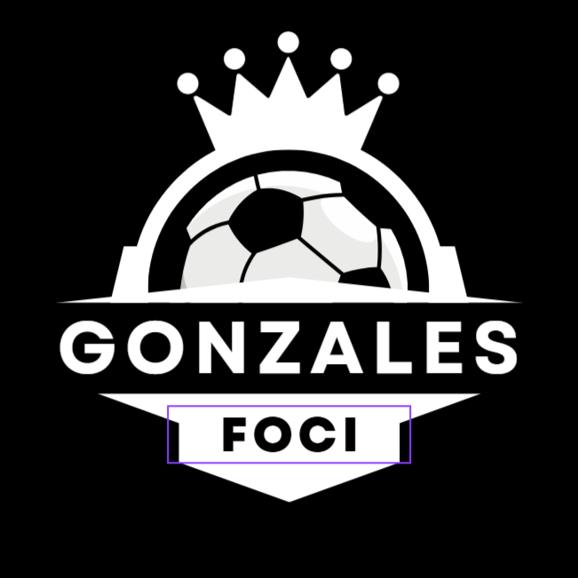

Kezdőlap
Mérkőzések

Friss meccsek és események a világ futballjából!
Legyél naprakész a legújabb mérkőzésekkel és statisztikákkal!
1. Csapat:
-- Válassz csapatot --
2. Csapat:
-- Válassz csapatot --
Helyszín: -
Jegy vásárlás